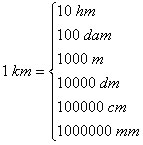
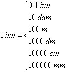
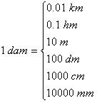
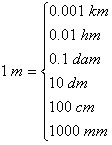
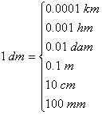
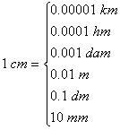
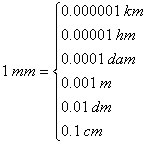

A bit of theory |
Conversione di lunghezze |
Un po' di teoria |
|
The lengths are measured in "m" in the International System (SI). Generally multiples and submultiples of the meter are used. |
Le lunghezze si misurano in "m" nel Sistema Internazionale (SI). Generalmente vengono ancora utilizzati i multipli ed i sottomultipli del metro. |
|
|
Adopted formulas:        |
Scarica l'applet ed il relativo codice java (±14 KB) Download the applet and the Java code (±14 KB) |
Formule adottate: |
|
How to use the web calculator: Choose the unit of measure, type in the value to convert. To see the results click on the button <Calcola Lunghezze>. Use the web calculator only to verify your calculations. |
Come utilizzare la calcolatrice: Scegliere l´unitá di misura, digitare il valore da convertire. Per vedere i risultati premere il pulsante <Calcola Lunghezze>. Utilizzate la calcolatrice solo per verificare i vostri risultati. |